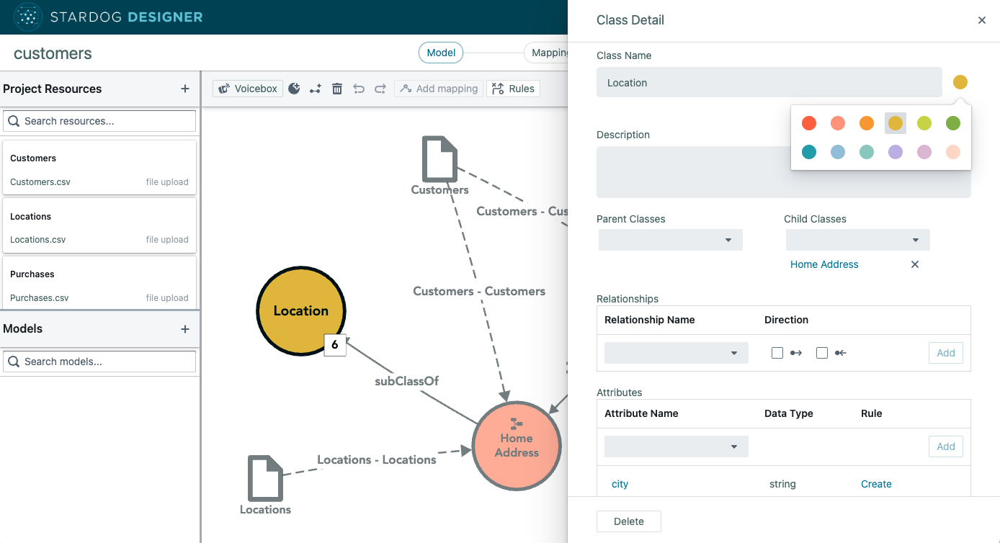
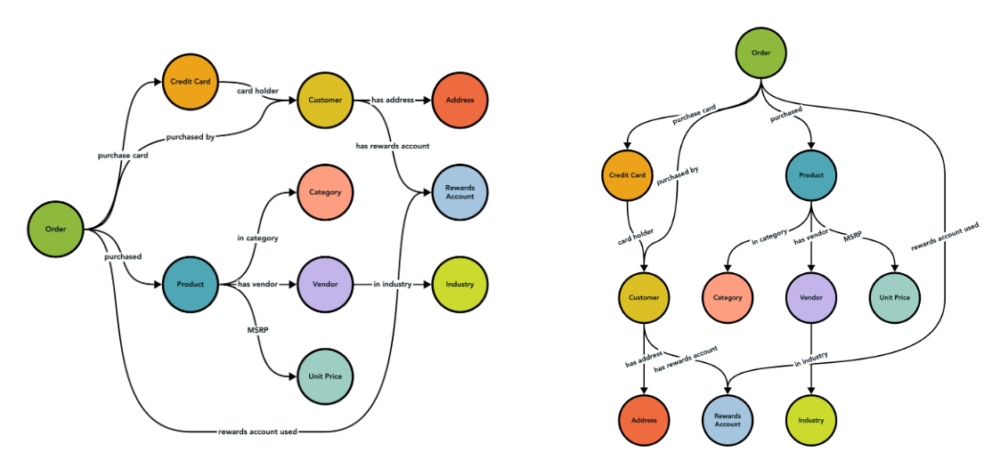
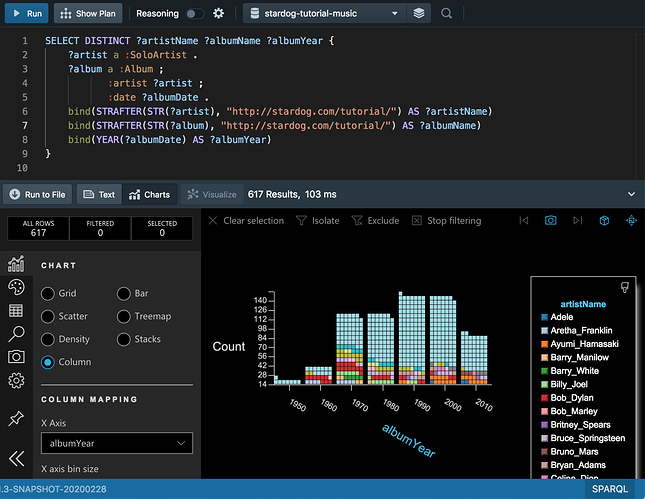

Stardog Designer
Stardog's core Designer product was directly based on my previous PhD work (see Origraph below); I was closely involved in designing and implementing this product from the ground up, as well as maintaining this project for two years.
Stardog Explorer
Although I joined shortly after Stardog's core Explorer product was released, I was responsible for designing and implementing major features (including graph layout improvements that almost made our CEO, Kendall Clark, "eat [his] hat" because he disbelieved that they were real)
Stardog Studio
I was responsible for maintaing Stardog's core Studio IDE product and associated libraries, keeping a legacy project useful across major company changes.
Origraph
A visual tool for modeling data as a network that supports a rich set of network wrangling operations.
Hanpuku
Hanpuku is a tool for bridging d3.js and Illustrator. You can edit a d3.js visualization with Illustrator, and/or edit an Illustrator document with d3.js.
Traveler
A visualization system for profiling HPC performance and behavior, specifically for the HPX and Phylanx projects.
Data Wrangling Survey
How do people think about their data? Spatially? As a table? As a network? What happens if you introduce a different abstraction? (interactive survey results)
uki.js

A minimal, d3-based Model-View framework for building larger linked view systems. Although I haven't been able to maintain it as well as I'd like, it's been used in a few projects, including this website!
Jacob's Ladder
Jacob's Ladder is a system I built during an internship at IBM for browsing aggregate subsets of large graphs.
Resonant Lab
Resonant Lab is a system I built during an internship at Kitware to help make various DARPA XDATA projects easier to use.
HCW HOSTED Housing Map

A small project for HCW HOSTED to help case workers find housing for healthcare workers during the COVID-19 pandemic.
SCI Ping Pong Tournament Interface

An interactive bracket for an in-house ping pong tournament at the SCI Institute.
SCI X Map

An interactive map that was displayed on a touch table for the 2016 SCI Institute Technical Exchange (SCI X).
calendar-creator
A simple, few-frills interface for creating minimal SVG calendars.